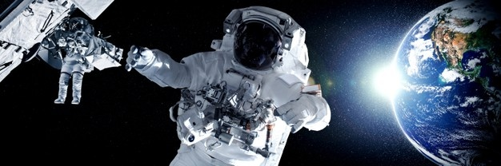
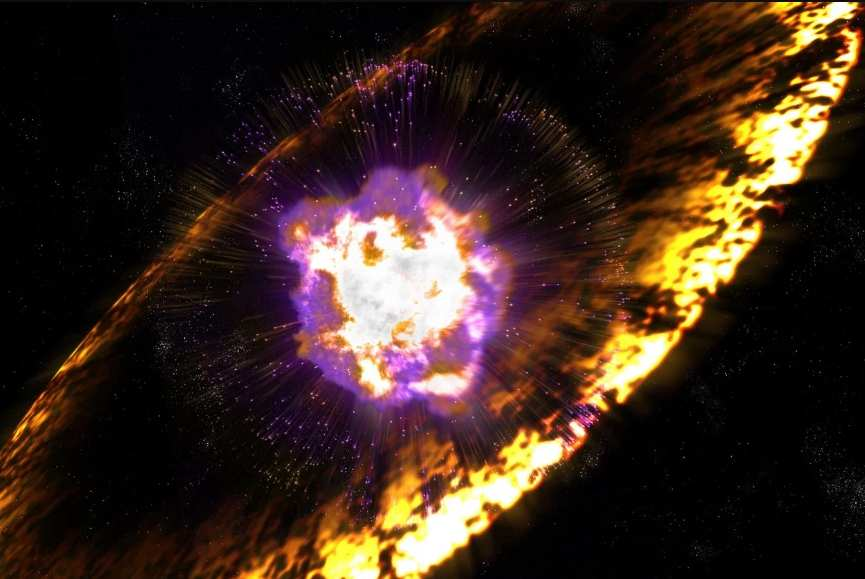
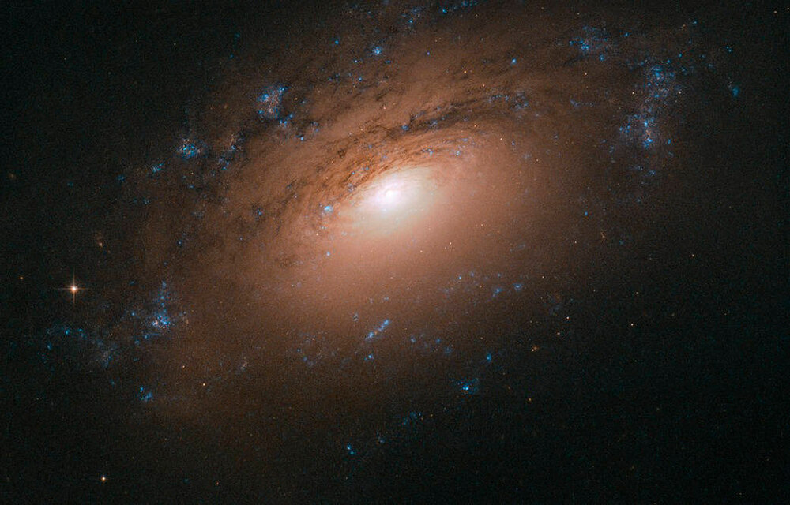
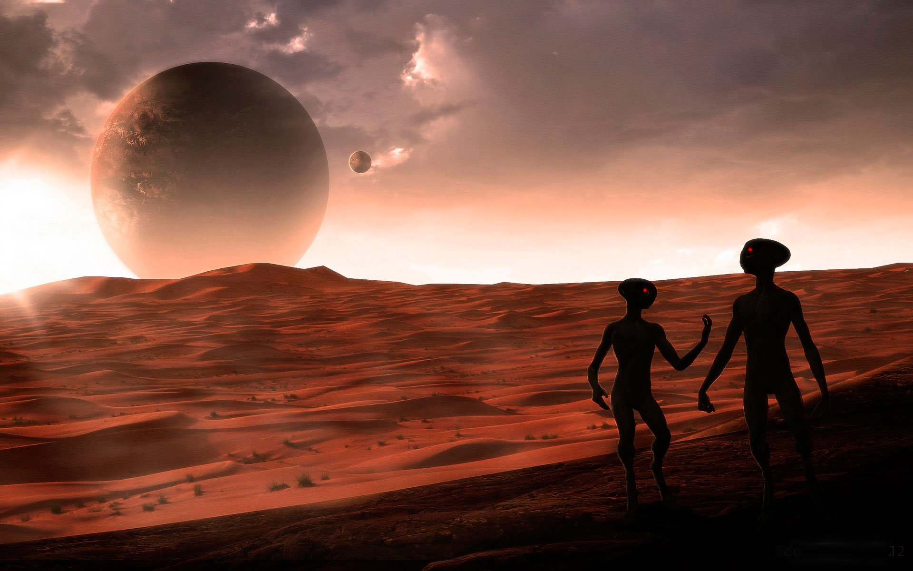

| Главная страница | Космос прошлого | Космос настоящего | Космос будущего |
 Сегодня путешествия в космос воспринимаются как нечто само собой разумеющееся. Над нами летают сотни спутников и тысячи прочих нужных и бесполезных объектов, за секунды до восхода солнца из окна спальни можно увидеть вспыхнувшие в ещё невидимых с земли лучах плоскости солнечных батарей Международной космической станции, космические туристы с завидной регулярностью отправляются «бороздить просторы» (тем самым воплощая в реальность ерническую фразу «если очень захотеть, можно в космос полететь») и вот-вот начнётся эра коммерческих суборбитальных полётов с чуть ли не двумя отправлениями ежедневно.
Освоение космоса управляемыми аппаратами и вовсе поражает всякое воображение: тут и снимки давно взорвавшихся звёзд, и HD-изображения дальних галактик, и веские доказательства возможности существования жизни на других планетах. Корпорации-миллиардеры уже согласовывают планы по строительству на орбите Земли космических отелей, да и проекты колонизации соседних нам планет давно не кажутся отрывком из романов Азимова или Кларка. Очевидно одно: однажды преодолев земное тяготение, человечество будет вновь и вновь стремиться ввысь, к бесконечным мирам звёзд, галактик и вселенных. Хочется пожелать только, чтобы нас никогда не покидала красота ночного неба и мириадов мерцающих звёзд, по-прежнему манящих, таинственных и прекрасных, как в первые дни творения.
  
К тому же сейчас все чаще возникают споры о том, является ли космос достоянием всего человечества, либо же перед лицом Вселенной все государства «равны, но некоторые равнее». А в условиях пандемии коронавируса и нарастающем волнении из-за ухудшающейся экологической обстановки отдельные мировые правительства, привыкшие жить в идеологии постоянно растущего потребления, присматриваются к новым планетам, строя планы побега с кажущегося «тонущего корабля».
Как уже не раз показывала история, великие научные открытия всегда оказываются тесно связанными с коммерческими, властными и стратегическими интересами государств и всего мира. Космос по сравнению с Землей все еще остается новым пространством, пока не зависящим от чьего-либо влияния и способным приносить выгоду в будущем.
Но нельзя отрицать кооперацию стран для решения отдельных задач не во благо «избранных», а ради всего человечества. Космос пока что остается одним из примеров такого взаимодействия: многие исследования ведутся совместно учеными-представителями разных стран: они обмениваются опытом, делятся новыми разработками, развивают общемировой научно-технический потенциал. Однако, безусловно, до тех пор, пока отдельные государства ставят свои интересы выше других, старт новой космической гонки видится неизбежным.
| Главная страница | Космос прошлого | Космос настоящего | Космос будущего |